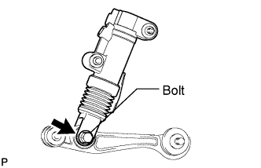
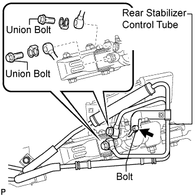
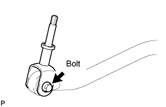
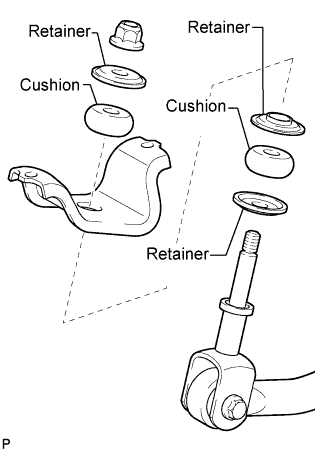
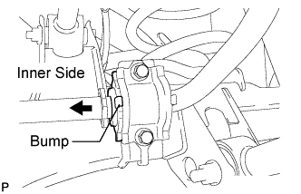
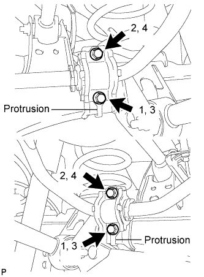

REAR STABILIZER BAR (w/ KDSS) > INSTALLATION |
| 1. INSTALL REAR SUSPENSION CONTROL BLEEDER PLUG |
 |
Install the 2 suspension control bleeder plugs to the rear stabilizer control cylinder.
| 2. INSTALL REAR STABILIZER LINK ASSEMBLY |
 |
Install the rear stabilizer link with the bolt and nut.
| 3. INSTALL REAR NO. 2 STABILIZER LINK |
 |
Install the No. 2 rear stabilizer link with the 2 bolts and 2 nuts.
| 4. TEMPORARILY INSTALL REAR STABILIZER CONTROL CYLINDER |
Temporarily install the rear stabilizer control cylinder to the frame with the bolt.
 |
Install the rear stabilizer control tube and 2 new gaskets to the rear stabilizer control cylinder with the 2 union bolts.
Install the bolt.
| 5. INSTALL STABILIZER LINK SUB-ASSEMBLY |
 |
Install the stabilizer link to the stabilizer bar with the bolt and nut.
 |
Make sure that all parts are facing as shown in the illustration and install the stabilizer end bracket, retainers and cushions with a new nut.
| 6. INSTALL REAR STABILIZER BAR SUB-ASSEMBLY |
 |
Install the 2 bushes to the outer side of the bush stoppers on the rear stabilizer bar as shown in the illustration.
 |
Install the 2 stabilizer bar brackets with the 4 bolts.
 |
Install the stabilizer end bracket with the 2 bolts.
 |
Install the stabilizer link assembly to the ball joint dust cover protector.
 |
Install the stabilizer bar to the stabilizer link with the nut.
| 7. BLEED AIR FROM SUSPENSION FLUID |
Bleed air from the suspension fluid (Click here).
| 8. INSPECT FOR SUSPENSION FLUID LEAK |
Perform a driving test.
Check for fluid leakage from the parts and connections.

| 9. INSTALL EXHAUST CENTER PIPE ASSEMBLY |
for 2UZ-FE:
Install the center exhaust pipe (Click here).
for 1VD-FTV:
Install the center exhaust pipe (Click here).
| 10. INSTALL TAILPIPE ASSEMBLY |
for 2UZ-FE:
Install the tailpipe (Click here).
for 1VD-FTV:
Install the tailpipe (Click here).
| 11. STABILIZE SUSPENSION |
Install the rear wheels.
Lower the vehicle.
Press down on the vehicle several times to stabilize the suspension.
| 12. TIGHTEN REAR STABILIZER CONTROL CYLINDER |
Tighten the bolt.
| 13. INSTALL REAR STABILIZER CONTROL TUBE INSULATOR |
 |
Install the rear stabilizer control tube insulator with the 2 bolts.
| 14. MEASURE VEHICLE HEIGHT |
Set the tire pressure to the specified value(s) (Click here).
Bounce the vehicle to stabilize the suspension.
 |
Measure the distance from the ground to the top of the bumper and calculate the difference in the vehicle height between left and right. Perform this procedure for both the front and rear wheels.
| 15. CLOSE STABILIZER CONTROL WITH ACCUMULATOR HOUSING SHUTTER VALVE |
Using a 5 mm hexagon socket wrench, tighten the lower and upper chamber shutter valves of the stabilizer control with accumulator housing.
| 16. INSTALL STABILIZER CONTROL VALVE PROTECTOR |
 |
Install the valve protector with the 3 bolts.
Attach the clamp, and connect the connector to the valve protector.